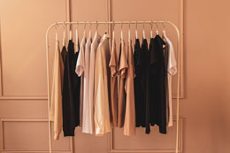

¿Quienes Somos?

EcoShopping SAS es una empresa que se dedica a preservar los recursos naturales por
medio de la reutilización. Nuestros productos son de muy buena calidad, y proceden de una
fuente confiable, lo que le genera en nuestros clientes una buena imagen e intenciones de seguir
comprando en nuestras tiendas. EcoShopping busca que cada persona sea auténtica, que encuentre su
propio estilo, que varíe su vestir con diseños de diversas épocas, que renueve constantemente su
clóset; todo esto de una manera económicamente accesible. Nuestras prendas pasan por un proceso
riguroso de selección, lavado industrial y etiquetación.

Nuestra Historia
En agosto de 2016 decidimos iniciar un proyecto llamado Reciclando Vida, en el que comprometiamos
las familias del barrio Popular #2 a que hicieran una adecuada separación de sus residuos sólidos.
Todos los días hacíamos socializaciones, logrando educar a más de 500 familias en el sector.
Los días martes y jueves pasábamos recogiendo el reciclaje bien limpio y seleccionado. Las familias
también depositaban prendas, zapatos y artículos en buen estado que ya no necesitaban, entonces comenzamos
a almacenar las cosas buenas sin saber aún qué hacer con ellas. Después de que no volvimos a hacer la ruta de
recolección de reciclaje por el barrio, ya no teníamos ropa para comercializar. Nos enfrentamos a un problema
que ahora mismo afecta la ropa usada en Colombia, no teníamos proveedores que nos ofrecieran
prendas de calidad, limpias y legales. Decidimos coger el camino estrecho e iniciar un canal de
aprovisionamiento diferente al de los demás. Hicimos un estudio, que nos llevó a conocer de qué manera,
el mercado de ropa usada en la ciudad recolecta sus prendas para vender en roperos, fundaciones, iglesias,
ares como la Minorista, Prado centro (“los puentes”) y el Naranjal. Encontramos una cadena completamente
informal, excepto las fundaciones e iglesias que recibían donaciones, pero ellos a pesar de ser el mercado
con una procedencia más confiable, no tenían la estructura necesaria para ser nuestros proveedores.
Misión y Visión
Misión
EcoShopping es una empresa que aporta al cuidado del medio ambiente, promovemos el consumo
consciente y responsable de moda, comercializando prendas y artículos reutilizados para darle una vida
adicional a los productos que vendemos.
Visión
EcoShopping será la empresa líder en el 2022 en el comercio de ropa reutilizable en Medellín,
vamos a impactar de manera positiva el medio ambiente y a la economía de los ciudadanos por medio
de la compra y venta de prendas reutilizadas.